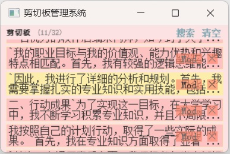

项目简介
这是一个复刻了小艺输入法剪切板功能的简易剪切板管理系统，解决了在 Win11 中难以查看剪切板历史记录的问题。项目围绕 C语言大作业 要求的 “增、删、改、查” 四个功能展开，依次实现。
编译环境：MSVC/GCC + mclib + Win2000 + C++11
程序简介
运行截图

使用方法
用户 (通过右键或快捷键等方式) 复制的内容将自动记录到程序中。用户可以通过将光标移动指定位置，并单击需要粘贴的内容，来完成粘贴。每条剪切板记录右侧两个按钮 “Mod” “X” 提供修改和删除功能。通过单击顶部标题栏下方两个按钮 “搜索” “清空” 使用查询和清空功能。
实现细节
在数据结构上，项目选择了内存管理优化过的链式循环队列。在查询方面，一开始选择了关键词提取匹配算法，但由于较为复杂编写难度大，改为使用最长公共子串模板。在 GUI 方面，使用了自己独立开发的图形库 mclib，由于是自己造的轮子，对实现细节较为熟悉，遇到问题能够快速定位解决。
完善和优化
此选题目的和初衷是为了更方便地进行复制和粘贴。
程序使用 Github 进行版本控制，并邀请了几位同学参与测试，提出了一些建议，例举部分如下：
- 原本软件的粘贴功能通过更新剪切板实现，但部分网址（例如：头歌等）禁止使用复制和粘贴功能。
解决方案：通过改用 SendInput 模拟发送按键。 - 剪切板要修改已经复制好的内容，给出的修改框太小了，有时候不能把内容显示完全。
解决方案：输入框独立弹出，并支持改变窗口大小。 - 已经复制的内容，如果下一次只复制其中一部分没办法实现，只能通过复制修改框内的内容，较为繁琐。
解决方案：有待进一步实现。 - … …
源代码
main.cpp
/* main.cpp */ #include "afx.h" int main() { afx::startup("剪切板管理系统"); while (1) { afx::peekmsg(); afx::print(); } return 0; }
afx.h
/* afx.h */ #include "mclib/src/mclib.h" #include <string> using namespace std; using namespace mcl; namespace afx { /* gui */ void startup(char const* caption); void peekmsg(); void print(); int print_box(point1d_t y, string str, bool isnearest); int print_title(); double algo_lwst(wstring& a, wstring b); /* lg common substr */ void paste(std::wstring& str); enum :int { TW = 7 }; /* data-structure */ class sys_t { public: /* linked-queue node */ class lqnode_t { public: string data; lqnode_t* next = nullptr; }; public: sys_t(); /* create head node */ ~sys_t(); /* release lkqueue */ bool push (string rhs); /* add node */ void pop_next(lqnode_t*& rhs); public: int MX = 32; int _len = 0; /* length */ lqnode_t* _r = 0; /* rear */ lqnode_t* _f = 0; /* front */ public: void* hwndfc = 0; public: lqnode_t** _pointdelete = 0; lqnode_t** _pointed = 0; lqnode_t** _pointmodify = 0; lqnode_t** _pointnearest = 0; point1d_t sw = ((TW << 2) + TW); point1d_t sx = 0; point1d_t sy = (TW << 1) + TW; bool b_inempty = false; bool b_insearch = false; char : 8; char : 8; }; extern sys_t sys; }
afx.cpp
/* afx.cpp */ #include "afx.h" #include "inputbox.h" #include "mclib/cpp/mcl_base.h" #include <iostream> #include <cmath> #include <string> #include <vector> #pragma warning(disable: 5039 4996) #define WIN32_LEAN_AND_MEAN # include <windows.h> #undef WIN32_LEAN_AND_MEAN namespace afx { sys_t sys; sys_t::sys_t() : _r (new (std::nothrow) lqnode_t()) { if (!_r) return; _f = _r; _r -> next = nullptr; FILE* fp = 0; fp = fopen(".bin", "r"); if (!fp) return ; string s; int c; while (~(c = fgetc(fp))) { if (!c) push(s), s.clear(); else s.push_back(char(c)); } fclose(fp); } sys_t::~sys_t() { FILE* fp = 0; fp = fopen (".bin", "w"); /* Thanks to @djw for submitting this issue! Corrected. */ while (_f) { _r = _f; _f = _f -> next; delete _r; if (_len && fp) fputs(_f->data.c_str(), fp), fputc(0, fp), --_len; } if (fp) fclose(fp); _f = nullptr; } bool sys_t::push(string rhs) { if (!_f) return 0; if (_len == MX) { /* linkedqueue is full of msg */ lqnode_t* t = _f -> next -> next; _f -> next -> next = _r -> next; _r -> next = _f -> next; _r = _r -> next; _f -> next = t; _r -> next = nullptr; _r -> data = rhs; return 1; } if (!_r -> next) { /* never got enough length */ lqnode_t* node = new (std::nothrow) lqnode_t(); if (!node) return 0; ++ _len; _r -> next = node; _r = node; _r -> next = nullptr; _r -> data = rhs; return 1; } /* has got enough length */ ++ _len; _r = _r -> next; _r -> data = rhs; return 1; } void sys_t:: pop_next (lqnode_t*& rhs){ -- _len; if (rhs -> next == _r) { _r = rhs; return ; } lqnode_t* t = rhs -> next -> next; rhs -> next -> next = _r -> next; _r -> next = rhs -> next; rhs -> next = t; } /* init window */ void startup(char const* caption) { key.set_repeat(true); auto size = display.get_desktop_size(); display.set_mode({ size.x / 5, size.y / 5 }, dflags.Resizable | dflags.DoubleBuf | dflags.AlphaWindow); display.set_window_pos({ size.x - (size.x / 4), size.y - (size.y / 3) }, true); display.set_caption(caption); if (!display) exit(0); display.get_surface().set_alpha(198); display.flip(); display.get_surface().set_alpha(198); } /* peek msg loop */ void peekmsg() { static tclock_t ck; string str; ck.tick(); HWND hwnd = ::GetForegroundWindow(); if (hwnd != display.get_wm_info()["window"]) sys.hwndfc = hwnd; for (auto& ev : event.get()) { switch (ev.type) { case event.Quit: exit(0); case event.ClipboardUpdate: { str = event.get_details_clipboard_a(); if (str.size()) sys.push(str); break; } case event.MouseWheel: { if (ev.wheel.delta.y < 0) { point1d_t ssm = sys.sw * sys._len - min(display.get_window_size().y - sys.sy - TW, sys.sw * sys._len); if (sys.sx + TW <= ssm) sys.sx += TW; else sys.sx = ssm; } else { if (sys.sx - TW >= 0) sys.sx -= TW; else sys.sx = 0; } break; } case event.KeyDown: { if (ev.key.key == key.VkDown) { point1d_t ssm = sys.sw * sys._len - min(display.get_window_size().y - sys.sy, sys.sw * sys._len); if (sys.sx + TW <= ssm) sys.sx += TW; else sys.sx = ssm; } if (ev.key.key == key.VkUp) { if (sys.sx - TW >= 0) sys.sx -= TW; else sys.sx = 0; } break; } case event.MouseButtonUp: { if (ev.mouse.button != mouse.BtnLButton) break; rect_t rc = display.get_window_rect(); if (afx::sys.b_inempty) { sys._r = sys._f; sys._len = 0; sys._pointdelete = 0; sys._pointed = 0; sys._pointmodify = 0; sys._pointnearest = 0; } if (afx::sys.b_insearch) { if (!sys._len) break; string lhs = input_box(0, const_cast<TCHAR*>(_T("查找（匹配相似度最高的元素）")), 0, rc.x, rc.y); mcl::mcl_simpletls_ns::mcl_m2w_str_t wlhs(lhs.c_str()); wstring lwlhs = (wchar_t*)(wlhs); if (!lhs.size()) break; double maxn = -1, n = 0; int i = 0, j = 0; auto** mint = &afx::sys._f; for (auto** it = &afx::sys._f; *it != afx::sys._r; it = &(*it)->next, j++){ mcl::mcl_simpletls_ns::mcl_m2w_str_t wrhs((*it)->next->data.c_str()); n = algo_lwst(lwlhs, wstring((wchar_t*)wrhs)); if (n >= maxn) maxn = n, mint = it, i = j; } if (maxn < 1) { MessageBoxCentered(NULL, _T("什么都没有找到 QAQ\n真的，一个字都没有..."), _T("查找（匹配相似度最高的元素）"), MB_OK); break; } sys._pointnearest = mint; point1d_t y = sys.sy + (sys._len - i - 1) * sys.sw - sys.sx; point2d_t sz = display.get_window_size(); rect_t boxrc_out = { TW, y, rc.x - TW - TW, (TW << 2) + 4 }; rect_t boxrc_in = { boxrc_out.x + 1, boxrc_out.y + 1, boxrc_out.w - 2, boxrc_out.h - 2 }; rc = {0, sys.sy, sz.x, sz.y}; if (boxrc_in.x < rc.x || boxrc_in.y < rc.y || boxrc_in.x + boxrc_in.w > rc.x + rc.w || boxrc_in.y + boxrc_in.h > rc.y + rc.h) { sys.sx = (sys._len - i - 1) * afx::sys.sw; point1d_t ssm = sys.sw * sys._len - min(display.get_window_size().y - sys.sy, sys.sw * sys._len); if (sys.sx > ssm) sys.sx = ssm; } } else if (sys._pointdelete) { if (sys._pointed == sys._pointdelete) sys._pointed = 0; if (sys._pointmodify == sys._pointdelete) sys._pointmodify = 0; if (sys._pointnearest == sys._pointdelete) sys._pointnearest = 0; sys.pop_next(*sys._pointdelete); } else if (sys._pointmodify) { char* p = input_box(0, const_cast<TCHAR*>(_T("修改（更改指定的元素）")), const_cast<char*>((*sys._pointmodify)->next->data.c_str()), rc.x, rc.y); if (p[0]) (*sys._pointmodify) -> next -> data = p; } break; } case event.MouseButtonDown: { if (sys._pointed) { if (sys.hwndfc) { ::SwitchToThisWindow(HWND(sys.hwndfc), TRUE); mcl::mcl_simpletls_ns::mcl_m2w_str_t ws((*sys._pointed)->next->data.c_str()); wstring ws2 = static_cast<wchar_t*>(ws); paste(ws2); /* for (wchar_t c : ws2) */ /* ::PostMessage(HWND(sys.hwndfc), WM_IME_CHAR, c, 0); */ } } break; } } } } void print() { display.get_surface().fill(rgba(255, 222, 222, 50)); int i = 0, ret = 0; if (afx::sys._len) { for (auto** it = &afx::sys._f; *it != afx::sys._r; it = &(*it)->next, ++i) { ret = afx::print_box(afx::sys.sy + (afx::sys._len - i - 1) * afx::sys.sw - afx::sys.sx, (*it)->next->data.c_str(), it == sys._pointnearest); if (sys._pointdelete && (*it)-> next == (*sys._pointdelete) -> next && ret != 2) sys._pointdelete = 0; else if (ret == 2) sys._pointdelete = it; if (sys._pointed == it && ret != 1) sys._pointed = 0; else if (ret == 1) sys._pointed = it; if (sys._pointmodify == it && ret != 3) sys._pointmodify = 0; else if (ret == 3) sys._pointmodify = it; } } ret = afx::print_title(); afx::sys.b_inempty = ret == 1; afx::sys.b_insearch = ret == 2; display.flip(); } int print_box (point1d_t y, string str, bool isnearest) { point2d_t wndsz = display.get_window_size(); point2d_t ms = mouse.get_pos(); rect_t boxrc_out = { TW, y, wndsz.x - TW - TW, (TW << 2) + 4 }; rect_t boxrc_in = { boxrc_out.x + 1, boxrc_out.y + 1, boxrc_out.w - 2, boxrc_out.h - 2 }; rect_t boxrc = { boxrc_in.x + (TW >> 1), boxrc_in.y + 1, boxrc_in.w - (TW >> 1), boxrc_in.h - 2}; int maxl = boxrc.w / TW; rect_t rc = boxrc_in; int ret = (ms.x >= rc.x && ms.y > rc.y && ms.x <= rc.x + rc.w && ms.y <= rc.y + rc.h) ? 1 : 0; display.get_surface().fill(rgba(255, 255, 66, 66), boxrc_out, blend.Alpha_rgba); display.get_surface().fill(ret ? (isnearest ? orange : rgba(255, 255, 66, 66)) : (isnearest ? rgba(255, 66, 66, 255) : rgba(255, 181, 181, 255)), boxrc_in, blend.Alpha_rgba); string ss; bool spc = false, end = false; int len = 0; bool isdbcs = false; for (char& i : str) { isdbcs = !isdbcs && i < 0; if (isdbcs && (!end && len + 1 == maxl)) { ss.push_back(' '); ++ len; } else if (isdbcs && (end && len + 4 == maxl)) { ss.push_back(' '); continue; } if (len >= maxl) { if (end) { for (int j = len; j && j != len - 3; --j) ss[unsigned(j)] = '.'; break; } ss.push_back('\n'); end = true; maxl <<= 1; } if (i == ' ' || i == '\t' || i == '\n' || i == '\r') { if (!spc) ss.push_back('`'), spc = true, ++len; continue; } ss.push_back(i), spc = false, ++len; } font_t ft("宋体", { TW, TW << 1 }); surface_t s = ft.render(ss.c_str(), false, 0xff000000); display.get_surface().blit(s, {boxrc.x, boxrc.y}, 0, blend.Alpha_rgba); rect_t rc2 = { boxrc.x + boxrc.w - (TW * 3), boxrc.y + TW + 1, TW << 1, TW << 1 }; int ret2 = (ms.x >= rc2.x && ms.y > rc2.y && ms.x <= rc2.x + rc2.w && ms.y <= rc2.y + rc2.h) ? 2 : ret; font_t ft2("宋体", { TW, TW << 1 }); s = ft2.render("×", false, ret2 == 2 ? lightblue : (ret ? 0xff000000 : 0xff444444), rgba(255, 100, 66, 166)); display.get_surface().blit(s, {rc2.x, rc2.y}, 0, blend.Alpha_rgba); rect_t rc3 = { boxrc.x + boxrc.w - (TW * 9), boxrc.y + TW + 1, TW * 5, TW << 1 }; int ret3 = (ms.x >= rc3.x && ms.y > rc3.y && ms.x <= rc3.x + rc3.w && ms.y <= rc3.y + rc3.h) ? 3 : ret2; font_t ft3("宋体", { TW, TW << 1 }); s = ft3.render(" Mod ", false, ret3 == 3 ? lightblue : (ret ? 0xff000000 : 0xff444444), rgba(255, 100, 66, 166)); display.get_surface().blit(s, { rc3.x, rc3.y }, 0, blend.Alpha_rgba); return ret3; } int print_title() { point2d_t ps = display.get_window_size(); point2d_t ms = mouse.get_pos(); display.get_surface().fill(rgba(255, 222, 222, 255), { 0, 0, ps.x, sys.sy - 2 }); font_t ft("宋体", { TW - 2, (TW - 2) << 1 }, true); surface_t s = ft.render("剪切板", false, 0xff000000); display.get_surface().blit(s, { TW + 1, TW * 2 / 3 }, 0, blend.Alpha_rgba); string st; stringstream ss; ss << '(' << sys._len << '/' << sys.MX << ')'; ss >> st; font_t ft2("宋体", { TW - 2, (TW - 2) << 1 }); s = ft2.render(st.c_str(), false, 0xff777777); display.get_surface().blit(s, { TW + (TW * 6), TW * 2 / 3 }, 0, blend.Alpha_rgba); rect_t rc = { ps.x - TW - 1 - (TW << 2), TW * 2 / 3, (TW - 1) << 2, (TW - 1) << 1 }; font_t ft3("宋体", { TW - 1, (TW - 1) << 1 }, true); int ret = (ms.x >= rc.x && ms.y > rc.y && ms.x <= rc.x + rc.w && ms.y <= rc.y + rc.h) ? 1 : 0; s = ft3.render("清空", false, ret ? aliceblue : 0xff6994a2); display.get_surface().blit(s, {rc.x, rc.y}, 0, blend.Alpha_rgba); rect_t rc2 = { ps.x - TW - 1 - (TW << 3) - TW, TW * 2 / 3, (TW - 1) << 2, (TW - 1) << 1}; font_t ft4("宋体", { TW - 1, (TW - 1) << 1 }, true); int ret2 = (ms.x >= rc2.x && ms.y > rc2.y && ms.x <= rc2.x + rc2.w && ms.y <= rc2.y + rc2.h) ? 2 : ret; s = ft4.render("搜索", false, ret2 == 2 ? aliceblue : 0xff6994a2); display.get_surface().blit(s, {rc2.x, rc2.y}, 0, blend.Alpha_rgba); return ret2; } double algo_lwst(wstring& a, wstring b){ size_t n = a.length(), m = b.length(); vector<vector<int>> arr(n, vector<int>(m)); auto fc = [](wchar_t c) {return c >= 'A' && c <= 'Z' ? c - 'A' + 'a' : c; }; for (size_t i = 0; i != n; ++ i) { if (fc(b[0]) == fc(a[i])) arr[i][0] = int(i); else if (i > 0) arr[i][0] = arr[i-1][0] + 1; else arr[i][0] = 1; } for (size_t j = 0; j != m; ++ j) { if (fc(a[0]) == fc(b[j])) arr[0][j] = int(j); else if (j > 0) arr[0][j] = arr[0][j-1] + 1; else arr[0][j] = 1; } for (size_t i = 1; i != n; ++i) for (size_t j = 1; j != m; ++j) { if (fc(a[i]) == fc(b[j])) arr[i][j] = min(arr[i-1][j]+1, min(arr[i][j-1]+1, arr[i-1][j-1])); else arr[i][j] = min(arr[i-1][j]+1, min(arr[i][j-1]+1, arr[i-1][j-1]+1)); } double ret = pow(.5, double(arr[n - 1][m - 1])); for (size_t i = 0; i != n; ++ i) { if (fc(a[i]) == fc(b[0])) arr[i][0] = 1; else if (i != 0) arr[i][0] = arr[i-1][0]; else arr[i][0] = 0; } for (size_t j = 0; j != m; ++ j) { if (fc(a[0]) == fc(b[j])) arr[0][j] = 1; else if (j) arr[0][j] = arr[0][j-1]; else arr[0][j] = 0; } for (size_t i = 1; i != n; ++ i) for (size_t j = 1; j != m; ++ j) { if (fc(a[i]) == fc(b[j])) arr[i][j] = max(max(arr[i][j-1], arr[i-1][j]), arr[i-1][j-1]+1); else arr[i][j] = max(max(arr[i][j-1], arr[i-1][j]), arr[i-1][j-1]); } ret += double(arr[n - 1][m - 1]); return ret; } void paste(std::wstring &str) { size_t len = str.length(), i = 0, idx = 0; if (len == 0) return; std::vector<INPUT> in(len << 1); ZeroMemory(&in[0], in.size() * sizeof(INPUT)); while (i != len) { WORD ch = static_cast<WORD>(str[i++]); if (ch == 0x000A) { in[idx].type = INPUT_KEYBOARD; in[idx].ki.wVk = VK_RETURN; in[idx].ki.dwFlags = 0; ++idx; in[idx] = in[idx - 1]; in[idx].ki.dwFlags |= KEYEVENTF_KEYUP; ++idx; continue; } in[idx].type = INPUT_KEYBOARD; in[idx].ki.wScan = ch; in[idx].ki.dwFlags = KEYEVENTF_UNICODE; ++idx; if ((ch < 0xD800) || (ch > 0xDFFF)) { in[idx] = in[idx - 1]; in[idx].ki.dwFlags |= KEYEVENTF_KEYUP; ++idx; } else { in[idx].type = INPUT_KEYBOARD; in[idx].ki.wScan = (WORD) str[i++]; in[idx].ki.dwFlags = KEYEVENTF_UNICODE; ++idx; in[idx] = in[idx-2]; in[idx].ki.dwFlags |= KEYEVENTF_KEYUP; ++idx; in[idx] = in[idx-2]; in[idx].ki.dwFlags |= KEYEVENTF_KEYUP; ++idx; } } SendInput(UINT(in.size()), &in[0], sizeof(INPUT)); } }
另外，此程序中用到的 inputbox.h 代码如下：
# include "mclib/src/mclib.h" # pragma warning(disable: 5039) # define WIN32_LEAN_AND_MEAN # include <windows.h> # include <windowsx.h> # include <tchar.h> # undef WIN32_LEAN_AND_MEAN int WINAPI WndProc(HWND hWnd, UINT uMsg, WPARAM wParam, LPARAM lParam); HINSTANCE _hInstance; char* _lpWndMsg, * _lpDefValue, * _lpHelpFile; TCHAR* _lpWndTitle; int _nHelpIndex; HWND _hParent, _hDesktop, _hEdit, _hBtnOk, _hBtnCancel, _hBtnHelp, _hMsgText; RECT _st_rcDesktop, _st_rcWnd; HFONT _hWndFont; char _lpwfn[] = "Arial"; char *_lpWndFontName = (char*)_lpwfn; char* _szBuffer = 0; LRESULT lgt = 0; UINT _nMaxLine = 2048-1, _nEditStyle = WS_BORDER | WS_CHILD | WS_VISIBLE | ES_AUTOVSCROLL | ES_MULTILINE | SS_LEFT; /* ES_AUTOHSCROLL */ int WINAPI WndProc(HWND hWnd, UINT uMsg, WPARAM wParam, LPARAM lParam) { HDC hWndDc; WORD uBtnID; LRESULT lpm = 12; switch (uMsg) { case WM_DESTROY: if (_hWndFont) DeleteObject(_hWndFont); PostQuitMessage(0); break; case WM_CREATE: _hMsgText = CreateWindowExA(0, "Static", _lpWndMsg, WS_CHILD | WS_VISIBLE, 5, 5, 275, 70, hWnd, (HMENU)1000, _hInstance, 0); _hBtnOk = CreateWindowExA(0, ("Button"), ("确定(&K)"), WS_CHILD | WS_VISIBLE | BS_DEFPUSHBUTTON, 285, 5, 65, 20, hWnd, (HMENU)IDOK, _hInstance, 0); _hBtnCancel = CreateWindowExA(0, ("Button"), ("取消(&C)"), WS_CHILD | WS_VISIBLE, 285, 30, 65, 20, hWnd, (HMENU)IDCANCEL, _hInstance, 0); _hBtnHelp = CreateWindowExA(0, ("Button"), ("帮助(&H)"), WS_CHILD | WS_VISIBLE, 285, 55, 65, 20, hWnd, (HMENU)IDHELP, _hInstance, 0); _hEdit = CreateWindowExA(WS_EX_CLIENTEDGE, ("Edit"), _lpDefValue, _nEditStyle, 5, 5, 275, 85, hWnd, (HMENU)2000, _hInstance, 0); /* SendMessage(_hEdit, EM_SETLIMITTEXT, _nMaxLine, 0); */ SendMessage(_hEdit, EM_SETTABSTOPS, 1, LPARAM(&lpm)); _hWndFont = CreateFontA(12, 6, 0, 0, 12, 0, 0, 0, GB2312_CHARSET, OUT_DEFAULT_PRECIS, CLIP_DEFAULT_PRECIS, DEFAULT_QUALITY, DEFAULT_PITCH, _lpWndFontName); if (!lstrlenA(_lpHelpFile)) ShowWindow(_hBtnHelp, SW_HIDE); hWndDc = GetDC(hWnd); SelectObject(hWndDc, _hWndFont); ReleaseDC(hWnd, hWndDc); SendDlgItemMessageA(hWnd, 1000, WM_SETFONT, WPARAM(_hWndFont), 0); SendDlgItemMessageA(hWnd, 2000, WM_SETFONT, WPARAM(_hWndFont), 0); SendDlgItemMessageA(hWnd, IDOK, WM_SETFONT, WPARAM(_hWndFont), 0); SendDlgItemMessageA(hWnd, IDCANCEL, WM_SETFONT, WPARAM(_hWndFont), 0); SendDlgItemMessageA(hWnd, IDHELP, WM_SETFONT, WPARAM(_hWndFont), 0); break; case WM_SIZE: /* 365,130->285,30 */ ::SetWindowPos(_hBtnOk, 0, GET_X_LPARAM(lParam) - 70, 5, 65, 20, SWP_FRAMECHANGED); ::SetWindowPos(_hBtnCancel, 0, GET_X_LPARAM(lParam) - 70, 30, 65, 20, SWP_FRAMECHANGED); ::SetWindowPos(_hBtnHelp, 0, GET_X_LPARAM(lParam) - 70, 55, 65, 20, SWP_FRAMECHANGED); ::SetWindowPos(_hMsgText, 0, 5, 5, 1,1, SWP_FRAMECHANGED); ::SetWindowPos(_hEdit, 0, 5, 5, GET_X_LPARAM(lParam) - 85, GET_Y_LPARAM(lParam)-10, 0); break; case WM_KEYDOWN: if (wParam == VK_RETURN) SendMessage(hWnd, WM_COMMAND, IDOK, 0); break; case WM_SETFOCUS: SetFocus(_hEdit); break; case WM_COMMAND: uBtnID = LOWORD(wParam); switch (uBtnID) { case IDOK: lpm = SendMessage(_hEdit, WM_GETTEXTLENGTH, 0, 0) + 10; if (lgt < lpm) { lgt = lpm; delete[] _szBuffer; _szBuffer = new(std::nothrow) char[size_t(lgt)]; } if (_szBuffer) GetDlgItemTextA(hWnd, 2000, _szBuffer, int(lgt)); DestroyWindow(hWnd); break; case IDCANCEL: DestroyWindow(hWnd); break; case IDHELP: WinHelpA(hWnd, _lpHelpFile, HELP_INDEX, ULONG_PTR(_nHelpIndex)); break; }; break; default: return int(DefWindowProc(hWnd, uMsg, wParam, lParam)); } return true; } char* input_box(char* lpWndMsg = NULL, TCHAR* lpWndTitle = NULL, char* lpDefValue = NULL, int xPos = 0, int yPos = 0, int fIsType = 0, char* lpHelpFile = NULL, int nHelpIndex = 0) { if (!_szBuffer) { _szBuffer = new(nothrow) char[1]; lgt = 1; } if (_szBuffer) _szBuffer[0] = 0; _hParent = mcl::display.get_wm_info()["window"]; _lpWndMsg = lpWndMsg; _lpWndTitle = lpWndTitle; _lpDefValue = lpDefValue; _lpHelpFile = lpHelpFile; _nHelpIndex = nHelpIndex; if (fIsType) _nEditStyle |= fIsType; _hInstance = GetModuleHandle(NULL); _hDesktop = GetDesktopWindow(); GetWindowRect(_hDesktop, &_st_rcDesktop); if (!xPos) xPos = (_st_rcDesktop.right - 365) / 2; if (!yPos) yPos = (_st_rcDesktop.bottom - 130) / 2; WNDCLASSEX st_WndClass; HWND hWnd; RtlZeroMemory(&st_WndClass, sizeof(st_WndClass)); st_WndClass.cbSize = sizeof(st_WndClass); st_WndClass.hInstance = _hInstance; st_WndClass.hbrBackground = (HBRUSH)COLOR_BTNSHADOW; st_WndClass.hCursor = LoadCursor(0, IDC_ARROW); st_WndClass.hIcon = LoadIcon(0, IDI_APPLICATION); st_WndClass.hIconSm = st_WndClass.hIcon; # pragma warning(push) # pragma warning(disable: 4191) st_WndClass.lpfnWndProc = reinterpret_cast<WNDPROC>(&WndProc); # pragma warning(pop) st_WndClass.lpszClassName = _T("InputBox_Class"); st_WndClass.style = CS_HREDRAW | CS_VREDRAW; RegisterClassEx(&st_WndClass); hWnd = CreateWindowEx(0, _T("InputBox_Class"), _lpWndTitle, WS_DLGFRAME | WS_SYSMENU | WS_VISIBLE | WS_THICKFRAME, xPos, yPos, 365, 130, _hParent, 0, _hInstance, 0); MSG st_Msg; if (!hWnd) return 0; ShowWindow(hWnd, SW_SHOW); UpdateWindow(hWnd); while (GetMessage(&st_Msg, 0, 0, 0)) { if (st_Msg.message == WM_KEYDOWN) if ((st_Msg.wParam == VK_RETURN) && (::GetAsyncKeyState(VK_CONTROL) & 0x8000)) SendMessage(hWnd, st_Msg.message, st_Msg.wParam, LPARAM(st_Msg.wParam)); TranslateMessage(&st_Msg); DispatchMessage(&st_Msg); } return _szBuffer; } int MessageBoxCentered(HWND hWnd, LPCTSTR lpText, LPCTSTR lpCaption, UINT uType) { if (!hWnd) hWnd = display.get_wm_info()["window"]; static HHOOK hHookCBT{}; hHookCBT = SetWindowsHookEx(WH_CBT, [](int nCode, WPARAM wParam, LPARAM lParam) -> LRESULT { if (nCode == HCBT_CREATEWND && (LPCBT_CREATEWND(lParam))->lpcs->lpszClass == reinterpret_cast<LPTSTR>(ATOM(32770))) { RECT rcParent{}; GetWindowRect(((LPCBT_CREATEWND)lParam)->lpcs->hwndParent, &rcParent); ((LPCBT_CREATEWND)lParam)->lpcs->x = rcParent.left + ((rcParent.right - rcParent.left) - ((LPCBT_CREATEWND)lParam)->lpcs->cx) / 2; ((LPCBT_CREATEWND)lParam)->lpcs->y = rcParent.top + ((rcParent.bottom - rcParent.top) - ((LPCBT_CREATEWND)lParam)->lpcs->cy) / 2; } return CallNextHookEx(hHookCBT, nCode, wParam, lParam); }, 0, GetCurrentThreadId() ); int iRet = MessageBox(hWnd, lpText, lpCaption, uType); UnhookWindowsHookEx(hHookCBT); return iRet; }